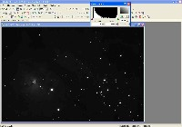
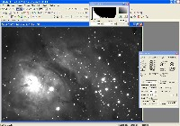
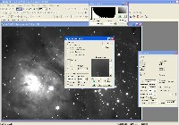
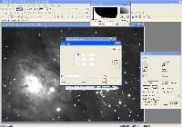
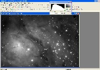
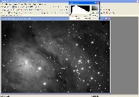

|
Image Processing - MaxIm DL Non-Linear Stretch
|
Astronomical image data generally has most of the interesting signal in the lower
part of the range of possible pixel values. While a few stars may have saturated
cores, the vast majority of the nebulosity or galaxy detail is not very bright.
As an example, a raw Luminance file is shown on the right with a screen stretch of
zero to 65536 (64k), the full range of this camera. If the image were transferred
into Photoshop in this form, this is what it would look like.
Somehow, the data at the low end of the brightness scale needs to be raised to a level
that shows interesting detail, while not over-brightening the brightest stars (and
their halos). This is generally done with a non-linear stretch.
One function which does this well is the MaxIm DL's DDP (Digital Development Process).
(There are many other ways and many other programs which can accomplish a non-linear
stretch. This is just one that is fairly easy and robust.)
|

|
|
Step A: Estimate DDP Background Level and Mid-Level
|
Start by measuring the average pixel values in the darkest portions of the
image. This can be done by first loading the information window (View | Information Window)
and moving the cursor (circle-crosshair) to one of the darkest areas in the frame.
The green circle at the upper right in the frame shown here shows where the cursor was for the
measurements shown in the information window.
Note the value Average Value shown in the information window. A good starting point for
the Background level will be about 200 less than this Average Value.
Establishing the appropriate Mid-Level value to use in the DDP is best done as
an iterative process, trying different values until one is found that gives the
results that look best to the imager. A useful starting point is twice the Background level.
|

|
|
Step B: Invoke DDP, Set User Kernel to Unity Matrix
|
The Digital Development Process (DDP) includes a sharpening feature. For our purposes, we
want to disable this feature and only use the non-linear stretch feature. This is done by
setting the User Kernel to all zeros except the central box.
Invoke DDP by selecting Filter | Digital Development.
Enter the starting Background and Mid-Level values in the DDP Parameters box.
|

|
In the Filter Type box, click the radio-button labelled Kernel - User Filter.
Then click the button Set User Filter.
In the box that is next displayed, click 3x3 in the Kernel Size box, then
enter zeros in all the matrix boxes except the central one, where you'll enter a 1.
When you're done, click the Close button on the User Filter dialog box,
then click OK on the Digital Development dialog box.
|

|
|
Step C: Evaluate Results, Redo DDP if necessary
|
After the DDP has completed, first make sure the screen stretch is at the maximum
limits - red box all the way to the left, green box all the way to the right.
If the Histogram in the Screen Stretch box shows clipping on the left side, you'll
want to decrease the Background level. If it shows a large black area on
the left, you'll want to increase the Bacground level.
In this example, the Background level is just about right, with a fairly small
black area on the left.
If the overall image brightness seems too bright, you'll want to increase the Mid-Level.
If the overall image brightness seems too dim, you'll want to decrease the Mid-Level.
|

|
While the results of the above DDP look reasonable, I generally prefer a bit less
brightness. To try another DDP run, first undo the first one by selecting
Edit | Undo Filter DDP. Then invoke Filter - Digital Development
again, enter the new parameters, and run the DDP again.
Repeat this iterative process, adjusting the Background and Mid-Level
parameters as needed, until the image looks just right to you.
Remember that you have to reset the Screen Stretch window to its maximum values
after each new DDP iteration.
|

|
{kind=link}
{kind=link}
{kind=link}
{kind=link}
{kind=link}
{kind=link}